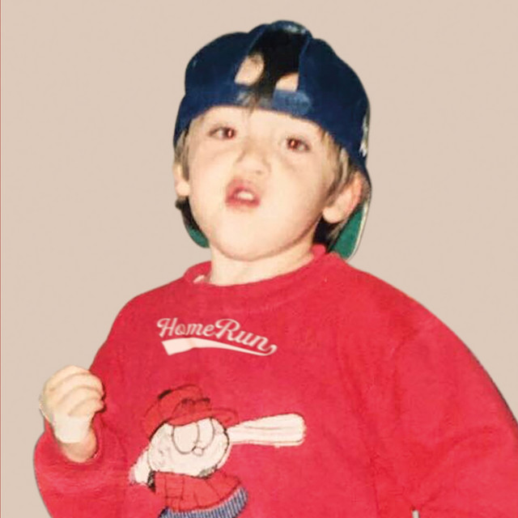
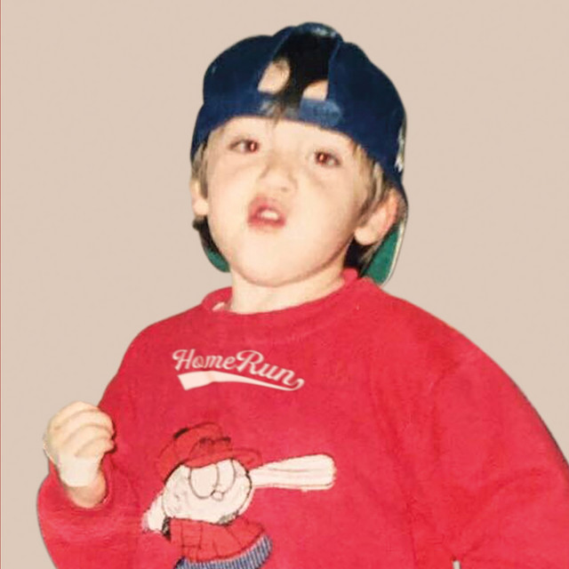
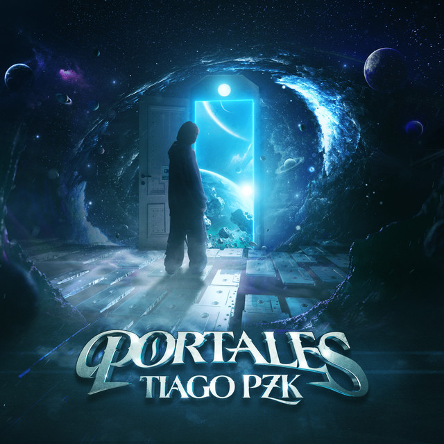
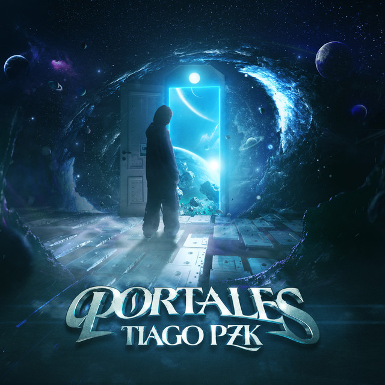

Trueno
1. Premios Gardel (2021)
- Mejor Álbum de Música Urbana por "Atrevido"
- Mejor Nuevo Artista
2. Premios Quiero (2021)
- Mejor Artista Nuevo
3. Premios Carlos Gardel (2022)
- Mejor Canción Urbana por "Mamichula" (con Nicki Nicole y Bizarrap)
Paulo Londra
1. Premios Quiero (2018)
- Mejor Artista Urbano
2. Heat Latin Music Awards (2019)
- Mejor Artista Región Sur
3. Premios Billboard de la Música Latina (2020)
- Artista del Año, Debut
- Top Latin Albums Artista del Año, Masculino
4. Premios Gardel (2019)
- Mejor Nuevo Artista
- Mejor Álbum de Música Urbana por "Homerun"
Lit Killah
1. Premios Quiero (2019)
- Mejor Artista Nuevo
2. Premios Gardel (2022)
- Mejor Canción de Música Urbana por "Flexin'" (con Bizarrap)
Bizarrap
1. Premios Quiero (2020)
- Mejor Productor
2. Premios Gardel (2020)
- Mejor Colaboración de Música Urbana por "Mamichula" (con Trueno y Nicki Nicole)
3. Latin Grammy Awards (2021)
- Nominado a Mejor Productor del Año
4. Premios Carlos Gardel (2022)
- Mejor Producción del Año por "BZRP Music Sessions"
Tiago PZK
1. Premios Gardel (2021)
- Mejor Canción de Música Urbana por "Sola"
2. Premios Quiero (2021)
- Mejor Artista Nuevo
Khea
1. Premios Quiero (2019)
- Mejor Artista Urbano
2. Premios Gardel (2020)
- Mejor Canción de Música Urbana por "Loca" (con Duki y Cazzu)
3. Heat Latin Music Awards (2021)
- Mejor Artista Región Sur
Ysy A
1. Premios Gardel (2019)
- Mejor Álbum de Música Urbana por "Hecho a Mano"
2. Premios Quiero (2020)
- Mejor Artista Independiente


 



 
